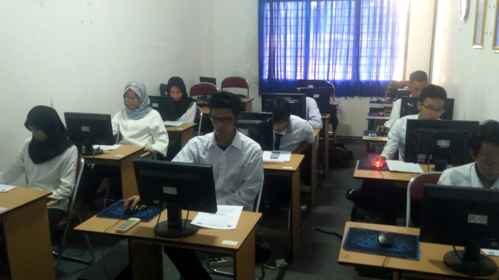
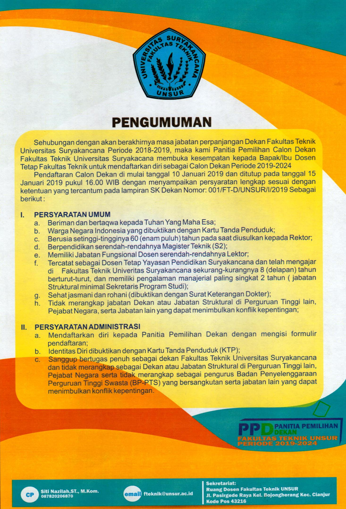
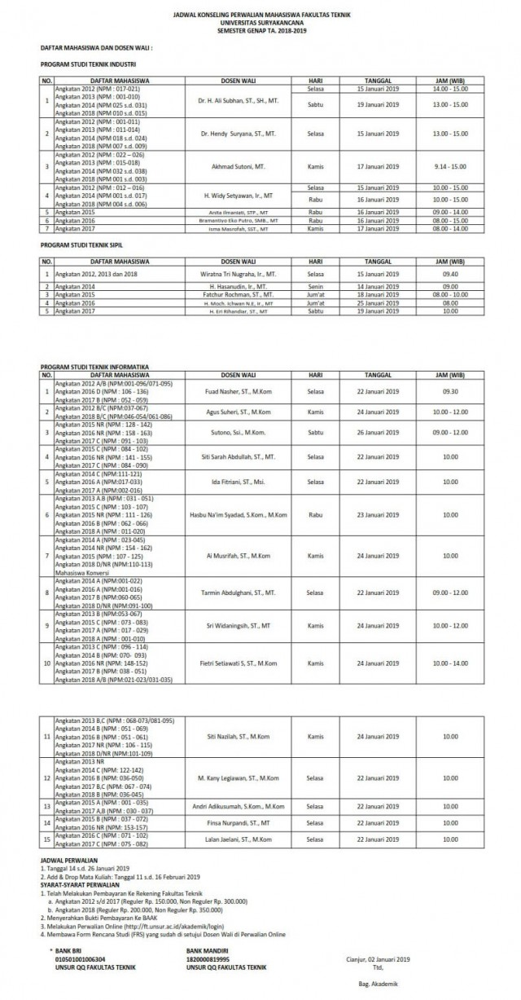

Grand Opening Fest Infosil V “MAKE IT (Milenial and Creativity Engineering in Traditional Culture)"”
Kegiatan festival kampus merupakan ajang kreasi mahasiswa yang tepat untuk mengekspresikan bakat-bakat…
Read more...

Seminar Tugas Akhir Periode Januari 2019 T.A 2018-2019
Kegiatan seminar tugas akhir yang periode bulan Januari dilaksanakan pada Rabu dan Kamis/ 30 Januari
Read more...
Kegiatan Sosialisasi Kerja Praktek T.A 2018-2019
Kegiatan Sosialisasi Kerja Praktek Mahasiswa angkatan 2016 atau yang mengambil Mata Kuliah Kerja Praktek…
Read more...
Laboratorium Komputer Program Studi Teknik Informatika
Laboratorium Komputer Program Studi Teknik Informatika
Laboratorium Komputer Teknik Informatika merupakan fasilitas penunjang kegiatan perkuliahan di lingkungan…
Read more...Perwalian Semester Genap TA. 2018-2019
Berikut Kami Sampaikan Jadwal Perwalian Semester Genap TA. 2018-2019
Read more...
Pengumuman Pendaftaran Calon Dekan FTUNSUR
Pengumuman Pendaftaran Calon Dekan FTUNSUR
Pengumuman Pendaftaran Calon Dekan FTUNSUR
Read more...
Jadwal Ujian Akhir Semester Ganjil T.A 2018-2019
Jadwal Ujian Akhir Semester Ganjil T.A 2018-2019
PENGUMUMAN...Berikut kembali diupload jadwal UAS Ganjil 2018-2019 klik link berikut download jadwal.…
Read more...